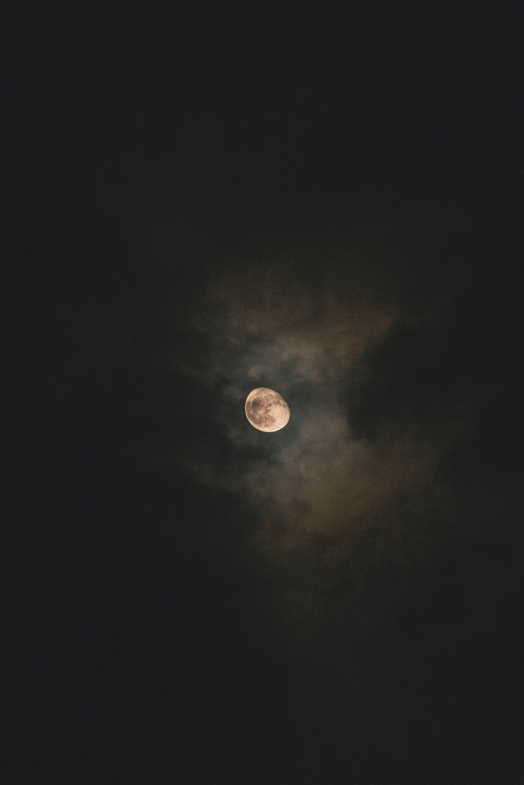

HERE in the dark, O heart;
Alone with the enduring Earth, and Night,
And Silence, and the warm strange smell of clover;
Clear-visioned, though it break you; far apart
From the dead best, the dear and old delight;
Throw down your dreams of immortality,
O faithful, O foolish lover!
Here’s peace for you, and surety; here the one
Wisdom—the truth!—“All day the good glad sun
Showers love and labour on you, wine and song;
The greenwood laughs, the wind blows, all day long
Till night.” And night ends all things.
Then shall be
No lamp relumed in heaven, no voices crying,
Or changing lights, or dreams and forms that hover!
(And, heart, for all your sighing,
That gladness and those tears are over, over.…)
And has the truth brought no new hope at all,
Heart, that you’re weeping yet for Paradise?
Do they still whisper, the old weary cries?
“ ’Mid youth and song, feasting and carnival,
Through laughter, through the roses, as of old
Comes Death, on shadowy and relentless feet,
Death, unappeasable by prayer or gold;
Death is the end, the end!”
Proud, then, clear-eyed and laughing, go to greet
Death as a friend!
Exile of immortality, strongly wise,
Strain through the dark with undesirous eyes
To what may lie beyond it. Sets your star,
O heart, for ever! Yet, behind the night,
Waits for the great unborn, somewhere afar,
Some white tremendous daybreak. And the light,
Returning, shall give back the golden hours,
Ocean a windless level, Earth a lawn
Spacious and full of sunlit dancing-places,
And laughter, and music, and, among the flowers,
The gay child-hearts of men, and the child-faces
O heart, in the great dawn!